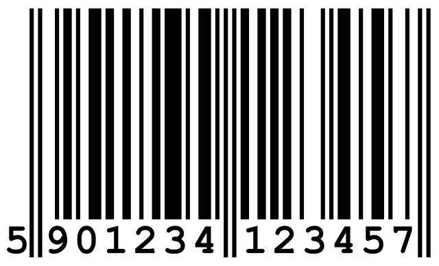

VOCABULARIO TECNICO DE INGLES A ESPAÑOL SOFWARE.
Carácter
EN ESPAÑOL:Es una unidad de información que corresponde aproximadamente con un grafema o con una unidad o símbolo parecido. It is a unit of information that correspondidosIN INGISH;It is a unit of information that corresponds approximately to a grapheme or a similar unit or symbol.It is a unit of information that corresponds approximately to a grapheme or a similar unit or symbol.
Bit
EN ESPAÑOL:Se utiliza para representar la contraposición entre dos valores (apagado y encendido, falso y verdadero, abierto y cerrado).IN INGLISH:It is used to represent the contrast between two values (off and on, false and true open and closed
Byte
EN ESPAÑOL:Unidad de información estándar utilizada en informática y en telecomunicaciones. IN ONGLISH:Standar information unit used in computing and telecommunications
Software
EN ESPAÑOL:Se conoce como software, logicial o soporte lógico al sistema formal de un sistema informático, que comprende el conjunto de componentes lógicos necesarios que hace posible la realización.
IN INGLISH:The formal system of a computer system is known as software, logic or logical support, which includes the set of necessary logical components that makes the implementation possible.

Hardware
EN ESAPÑOL:Parte física de un ordenador o sistema informático.IN INGLISH:Physical part of a computer or computer system.

Tics
EN ESPAÑOL:Permiten la compilación, procesamiento, almacenamiento, transmisión de información como: voz, datos, textos, video e imágenes.
IN INGLISH:They allow the compilation, processing, storage, transmission of information such as: voice, data, texts, video and images.
Wed
EN ESAPAÑOL:Sistema de distribucion de información basado en hipertexto o hipermedios enlazados y accesibles a través de internet.IN INGLISH:Information distribution system based on hypermedia linked and accessible through the internet.

Internet
EN ESAPÑOL:Permite el intercambio libre de información entre todos sus usuarios.IN INGLISH:It allows the free exchange of information between all its users.
Código
EN ESPAÑOL:Garantizan el funcionamiento de las aplicaciones o programas que permiten una buena comunicación entre el usuario y la computadora.IN INGLISH:They guarantee the operation of applications or programs that allow good communication between the user and the computer.

HTML Rank
EN ESAPAÑOL:Estructurar y desplegar una pagina web y sus contenidos.IN INGLISH:Structure and display a web page and its contents.
Router
EN ESPAÑOL:Envía información desde internet a los dispositivos personales, como computadoras, teléfonos, etc.IN INGLISH:Send information from the Internet to personal devices, such as computers, phones, etc.
Cable Rj-45
EN ESAPÑOL:Conecta un dispositivo con acceso a internet con otro dispositivo de red.IN INGLISH:Connect a device with Internet access to another network device.

Laptops
EN ESAPAÑOL:Muchos de ellos están diseñados para soportar software y archivos.IN INGLISH:Many of them are designed to support software and files
DVD
EN ESAPÑOL:disco óptico capaz de contener en forma codificada gran cantidad de imágenes, sonidos o datos.IN INGLISH:optical disc capable of containing a large number of images, sounds or data in encoded form
Cañon LCD
EN ESAPAÑOL:es un tipo de proyector para la visualización de video, imágenes o datos informativoIN INGLISH:it is a type of projector for displaying video, images or informational data
PLOTTER
EN ESPAÑOL:se utilizan para todo tipo de aplicaciones de construcción y MCAD, incluyendo dibujos técnicos, mapas, ortofotos y renderizacionesIN INGLISH:They are used for all types of construction and MCAD applications, including technical drawgins, orthophoto maps and rendering
Trending
deriva del sustantivo tren que en ingles significa “tendencia” se trata de conocer sobre que se esta hablandoIN INGLISH:It derives from the noun train wich in English means “trending” it is about knowing what you are talking about
Challenge
EN ESAPAÑOL:consiste en la palabra “desafio” que trata de hacer un retoIN INGLISH:consists of the word “challenge” that tries to make a challenge
Youtuber
EN ESPAÑOL:persona que se dedica a hacer emisiones en directo o en diferido en determinada plataforma o servicioIN INGLISH:person who is dedicated to making live or recorded broadcasts on a certain platform or service

Influencer
EN ESPAÑOL:es una persona que cuenta con cierta credibilidad sobre un tema concretoIN INGLISG:is a person who has a certain credibility on a specific topic
Diseño Grafico
EN ESPAÑOL:su labor es idear y plasmar en imágenes el mensaje que se pretende transmitir a un publico determinadoIN INGLISH:Your job is to devise and capture in images the message that is intended to be transmitted to a specific audience.

Mangas
EN ESPAÑOL:termino que se le da a los comics y novelas graficas japonesas que contiene una secuencia narrativaIN INGLISH:term given to Japanese comics and graphic novels that contain a narrative sequence
Bluethooht
EN ESAPAÑOL:es una tecnología de comunicación inalámbrica que se puede ser usada para transmisión de datos de corto alcance de un dispositivo a otroIN INGLISH:It is a wireless communication technology that can be used for short-range data transmission from one device to another.
Codigo QRL
EN ESPAÑOL:es un código de respuesta rápida es la evolución del código de barras y permite al ser escaneado ver la información que contieneIN INGLISH:It is a quick response code, it is the evolution of the barcode and allows you to see the information it contains when scanned.
Codigo de barras
EN ESPAÑOL:es un conjunto de números y líneas paralelas de distintos grosores que forman un código universalIN INGLISH:is a set of numbers and parallel lines of different thicknesses that form a universal code
